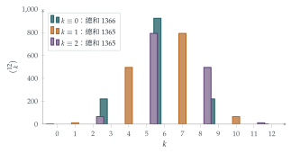

STEP I 1990，第 2 題
繼續之前，請先閱讀題目（原題為英文）。題目載於 STEP Support Programme 的題目資料庫： step.maths.org/questions/90-s1-q2
引子
帕斯卡三角形（Pascal’s triangle）同一行的二項式係數（binomial coefficients）加起來等於 \(2^n\)：只要在 \((1 + x)^n\) 中代入 \(x = 1\) 即可。若改為代入 \(x = -1\)，便得到交錯和，其值為 \(0\)；把兩式相加，可知位於偶數位置的係數之和為 \(2^{n-1}\)，剛好是一半。所以偶數位置和奇數位置的項把總和平分。
那麼每隔兩項取一個、即每第三個係數又如何？沒有任何實數 \(x\) 能夠挑出位置 \(0, 3, 6, \ldots\)。但有一個複數可以。三次單位根（cube roots of unity）就像一個濾波器：對 \(1\)、\(\omega\) 和 \(\omega^2\) 取平均，冪 \(\omega^k\) 在 \(k\) 是 \(3\) 的倍數時給出 \(1\)，否則給出 \(0\)。這個想法稱為單位根濾波器（roots-of-unity filter），是離散傅立葉變換（discrete Fourier transform）的小型版本，而後者是有史以來最重要的算法之一。
動筆之前
\(\omega\) 是 \(z^3 - 1 = 0\) 的一個根。試把 \(z^3 - 1\) 因式分解。為甚麼由此可得 \(1 + \omega + \omega^2 = 0\)？
\(z^3 - 1 = (z - 1)(z^2 + z + 1)\)。由於 \(\omega^3 = 1\) 但 \(\omega \neq 1\)，\(\omega\) 必定是第二個因式的根：\(\omega^2 + \omega + 1 = 0\)。從幾何上看，\(1\)、\(\omega\) 和 \(\omega^2\) 是一個以原點為中心的等邊三角形的頂點，它們的和就是該三角形的質心，即 \(0\)。
逐步解題
階段 1 模與輻角
由 \(1 + \omega + \omega^2 = 0\)，得 \(1 + \omega^2 = -\omega\)。因為 \(\omega = e^{2\pi\mathrm{i}/3}\)，所以 \(-\omega = e^{\mathrm{i}\pi}e^{2\pi\mathrm{i}/3} = e^{5\pi\mathrm{i}/3} = e^{-\pi\mathrm{i}/3}\)。故 \(1 + \omega^2\) 的模（modulus）為 \(1\)，輻角（argument）為 \(-\frac\pi3\)。同理，\(1 + \omega = -\omega^2 = e^{\pi\mathrm{i}/3}\)，其模為 \(1\)，輻角為 \(\frac\pi3\)。
階段 2 濾波器
當 \(k\) 是 \(3\) 的倍數時，\(1 + \omega^k + \omega^{2k}\) 等於甚麼？不是倍數時又如何？
若 \(3 \mid k\)，則 \(\omega^k = 1\)，和為 \(3\)。若否，\(\omega^k\) 是 \(\omega\) 或 \(\omega^2\)，而無論哪一種情況，都有 \(1 + \omega^k + \omega^{2k} = 1 + \omega + \omega^2 = 0\)。因此，表達式 \(\frac13(1 + \omega^k + \omega^{2k})\) 在 \(3 \mid k\) 時等於 \(1\)，否則等於 \(0\)：它是一個偵測 \(3\) 的倍數的探測器。
把 \((1 + \omega^r)^n\) 對 \(r = 1, 2, 3\) 相加，每一項都用二項式定理（binomial theorem）展開。你得到甚麼？
由於 \(\omega^3 = 1\)， \[(1 + \omega)^n + (1 + \omega^2)^n + (1 + 1)^n = \sum_{k=0}^{n} \binom nk\bigl(\omega^k + \omega^{2k} + 1\bigr) = 3\sum_{3 \mid k} \binom nk.\] 另一方面，由階段 1， \[(1 + \omega)^n + (1 + \omega^2)^n + 2^n = e^{n\pi\mathrm{i}/3} + e^{-n\pi\mathrm{i}/3} + 2^n = 2\cos\frac{n\pi}{3} + 2^n.\] 兩邊除以 \(3\) 便得到所求公式。■
階段 3 兩個計算
對於 \(n = 25\)：\(\frac{25\pi}{3} = 8\pi + \frac\pi3\)，所以 \(\cos\frac{25\pi}{3} = \frac12\)，於是 \[\binom{25}{0} + \binom{25}{3} + \cdots + \binom{25}{24} = \frac{33554432 + 1}{3} = 11184811.\]
第二個和需要的是滿足 \(k \equiv 2 \pmod 3\) 的位置。怎樣修改濾波器，使它偵測的是 \(k \equiv 2\) 而不是 \(k \equiv 0\)？
把探測器平移：\(\frac13\bigl(1 + \omega^{k-2} + \omega^{2(k-2)}\bigr)\) 恰好在 \(k \equiv 2 \pmod 3\) 時等於 \(1\)。由於 \(\omega^{-2} = \omega\) 及 \(\omega^{-4} = \omega^2\)，由此可得 \[\sum_{k \equiv 2} \binom nk = \frac13\Bigl(2^n + \omega(1 + \omega)^n + \omega^2(1 + \omega^2)^n\Bigr).\] 取 \(n = 24\)，則 \((1 + \omega)^{24} = e^{8\pi\mathrm{i}} = 1\)，同樣 \((1 + \omega^2)^{24} = 1\)，所以括號內的值為 \(2^{24} + \omega + \omega^2 = 2^{24} - 1\)。由 \(2^{24} = 16777216\)， \[\binom{24}{2} + \binom{24}{5} + \cdots + \binom{24}{23} = \frac{16777215}{3} = 5592405. \qed\]

回顧
對單位根取平均，可按餘數篩選。\(\frac13\sum_{r}\omega^{rk}\) 等於 \(1\) 還是 \(0\)，視乎 \(3\) 是否整除 \(k\)。把多項式在各單位根處的值相加，便能挑出每第三個係數。
平移濾波器。取平均之前先乘以 \(\omega^{-rj}\)，便能挑出滿足 \(k \equiv j\) 的係數。
用複數求實數答案。答案是整數，題目問的也是整數，但解題的路徑卻穿過了複平面。
背後的數學
把 \(3\) 換成任意的 \(N\)，並把 \(\omega\) 換成 \(e^{2\pi\mathrm{i}/N}\)。對於一列數 \(a_0, a_1, \ldots, a_{N-1}\)，以下各數 \[\hat a_r = \sum_{k=0}^{N-1} a_k\,\omega^{rk}\] 構成它的離散傅立葉變換，而正是濾波恆等式 \(\sum_r \omega^{rk} = N\) 或 \(0\)，讓你可以從 \(\hat a_r\) 還原出 \(a_k\)。這個變換把一個訊號分解成它的各個頻率成分。1965 年，James Cooley 和 John Tukey 發表了一種方法，只需大約 \(N\log_2 N\) 步而非 \(N^2\) 步便能把它算出，這就是快速傅立葉變換（fast Fourier transform，簡稱 FFT）；高斯（Gauss）早在 1805 年已發現本質上相同的想法，但從未發表。FFT 應用於音訊和圖像壓縮（MP3 和 JPEG）、流動電話訊號、醫學掃描儀，以及極大數字的乘法，並且經常獲列為二十世紀最重要的算法之一。
生成函數
這個濾波器只是一個更宏大想法的其中一例：數列 \(a_0, a_1, a_2, \ldots\) 可以包裝成一個多項式或冪級數（power series）\(A(x) = \sum a_kx^k\)，稱為它的生成函數（generating function），而對數列進行的運算就變成對函數進行的運算。在 \(1\) 處求值，就是把數列求和；在單位根處求值，就是挑出各個剩餘類（residue classes）；求導則是把各項以 \(k\) 加權。這樣一來，許多計數問題都化為代數問題，而這正是第 9 章的核心技巧。同一個濾波器，配合五次單位根應用於 \((1 + x)^n\)，便會與正五邊形和黃金比（golden ratio）扯上關係；我們會在 第 6.1 節 繼續探討單位根的代數。
思維技巧
要從一個和之中挑出滿足某個條件的項，可找一個函數，使它在你想要的項上取值 \(1\)、在其餘的項上取值 \(0\)，而這個函數是由對稱平均構造出來的。
對單位根取平均就是經典的例子。同一個原理——「對一個對稱羣取平均，以分離出你想要的部分」——在代數中隨處可見，由單位根濾波器以至羣表示論（representation theory of groups）皆然。
延伸練習
偶數位置。利用二次單位根（\(1\) 和 \(-1\)）的濾波器，證明 \(\binom n0 + \binom n2 + \binom n4 + \cdots = 2^{n-1}\)。
另一個餘數。求 \(\binom n1 + \binom n4 + \binom n7 + \cdots\) 的公式，並驗證三條公式加起來等於 \(2^n\)。
每第四個。利用 \(\mathrm{i}\)，證明 \(\binom n0 + \binom n4 + \binom n8 + \cdots = \frac14\Bigl(2^n + 2^{n/2+1}\cos\frac{n\pi}{4}\Bigr)\)。
整除性。\(\{1, 2, \ldots, 12\}\) 有多少個子集的元素個數可被 \(3\) 整除？有多少個子集的元素之和可被 \(3\) 整除？（第二問的提示：考慮 \(\prod_{j=1}^{12}(1 + x^j)\) 在三次單位根處的值。）
延伸閱讀
Herbert Wilf, generatingfunctionology（A. K. Peters；可於網上免費閱覽）。一本引人入勝的生成函數入門書；單位根濾波器在書中很早便出現。
Arthur Benjamin & Jennifer Quinn, Proofs That Really Count（Mathematical Association of America）。以計數方法證明二項式恆等式。
T. W. Körner, Fourier Analysis（Cambridge University Press）。內容包括離散傅立葉變換和 FFT。